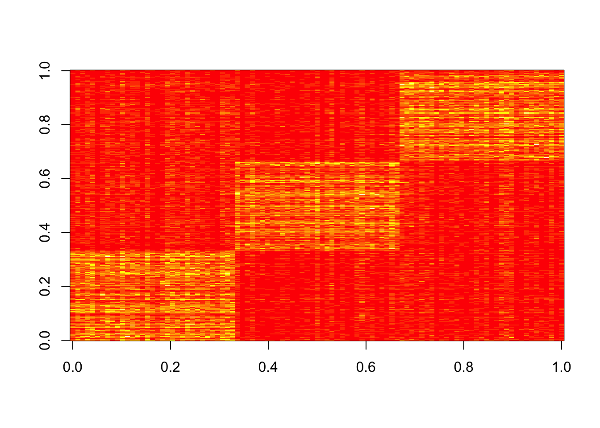
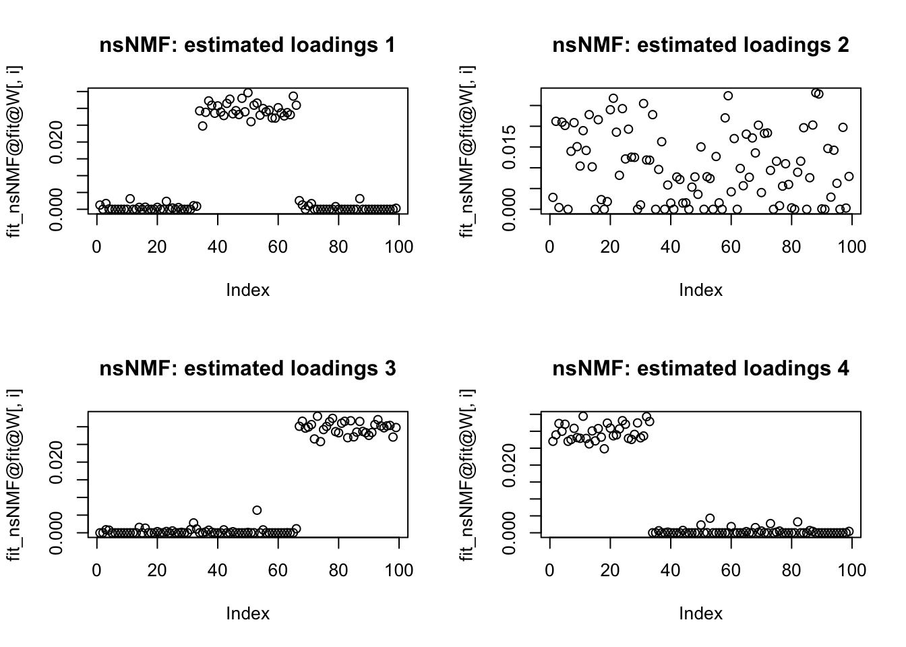
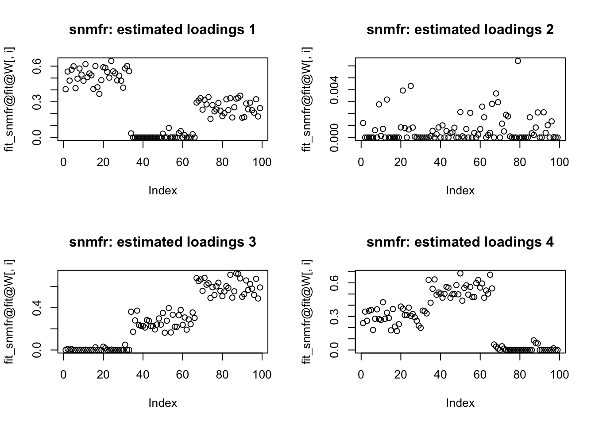

nmf_sparse6
zihao12
2019-11-05
Last updated: 2019-11-05
Checks: 7 0
Knit directory: ebpmf_demo/
This reproducible R Markdown analysis was created with workflowr (version 1.5.0). The Checks tab describes the reproducibility checks that were applied when the results were created. The Past versions tab lists the development history.
Great! Since the R Markdown file has been committed to the Git repository, you know the exact version of the code that produced these results.
Great job! The global environment was empty. Objects defined in the global environment can affect the analysis in your R Markdown file in unknown ways. For reproduciblity it’s best to always run the code in an empty environment.
The command set.seed(20190923) was run prior to running the code in the R Markdown file. Setting a seed ensures that any results that rely on randomness, e.g. subsampling or permutations, are reproducible.
Great job! Recording the operating system, R version, and package versions is critical for reproducibility.
Nice! There were no cached chunks for this analysis, so you can be confident that you successfully produced the results during this run.
Great job! Using relative paths to the files within your workflowr project makes it easier to run your code on other machines.
Great! You are using Git for version control. Tracking code development and connecting the code version to the results is critical for reproducibility. The version displayed above was the version of the Git repository at the time these results were generated.
Note that you need to be careful to ensure that all relevant files for the analysis have been committed to Git prior to generating the results (you can use wflow_publish or wflow_git_commit). workflowr only checks the R Markdown file, but you know if there are other scripts or data files that it depends on. Below is the status of the Git repository when the results were generated:
Ignored files:
Ignored: .Rhistory
Ignored: .Rproj.user/
Untracked files:
Untracked: analysis/.ipynb_checkpoints/
Untracked: analysis/Experiment_ebpmf_simple.Rmd
Untracked: analysis/ebpmf_demo.Rmd
Untracked: analysis/ebpmf_rank1_demo2.Rmd
Untracked: analysis/softmax_experiments.ipynb
Untracked: code/misc.R
Untracked: data/Compare_ebpmf_nmf2_out
Untracked: data/Compare_ebpmf_nmf2_out_ver2.Rds
Untracked: data/nmf_sparse3_elbo.Rds
Untracked: data/nmf_sparse3_loadings.Rds
Untracked: data/nmf_sparse3_summary.Rds
Untracked: data/trash/
Untracked: verbose_log_1571583163.21966.txt
Untracked: verbose_log_1571583324.71036.txt
Untracked: verbose_log_1571583741.94199.txt
Untracked: verbose_log_1571588102.40356.txt
Unstaged changes:
Modified: analysis/Compare_ebpmf_nmf.Rmd
Modified: analysis/Compare_ebvaepm_ebpm.Rmd
Modified: analysis/Experiment_ebpmf_rank1.Rmd
Modified: analysis/nmf_sparse.Rmd
Modified: analysis/nmf_sparse2.Rmd
Modified: analysis/nmf_sparse3.Rmd
Modified: analysis/softmax_experiments.Rmd
Modified: data/Compare_ebpmf_nmf2_out.Rds
Note that any generated files, e.g. HTML, png, CSS, etc., are not included in this status report because it is ok for generated content to have uncommitted changes.
These are the previous versions of the R Markdown and HTML files. If you’ve configured a remote Git repository (see ?wflow_git_remote), click on the hyperlinks in the table below to view them.
| File | Version | Author | Date | Message |
|---|---|---|---|---|
| Rmd | 4fbf8d9 | zihao12 | 2019-11-05 | nmf_sparse6.Rmd |
From https://dongyuexie.github.io/SMF/nmfsparse.html
Summary
L1 penalty in NNLM::nnmf either put no/littlle thresholding or thresholds all entries to zero.
nsNMF and snmf in NMF package give sparse estimate of loadings and factors.
Data
log_lik <- function(X, lam){
return(sum(dpois(x = X, lambda = lam , log = T)))
}set.seed(123)
n = 99
p = 300
k= 4
mfac = 2 # controls PVE of dense factor
L = matrix(0, nrow=n, ncol=k)
F = matrix(0, nrow=p, ncol=k)
L[1:(n/3),1] = 1
L[((n/3)+1):(2*n/3),2] = 1
L[((2*n/3)+1):n,3] = 1
L[,4] = 1+mfac*runif(n)
F[1:(p/3),1] = 1+10*runif(p/3)
F[((p/3)+1):(2*p/3),2] = 1+10*runif(p/3)
F[((2*p/3)+1):p,3] = 1+10*runif(p/3)
F[,4]= 1+mfac*runif(p)
lambda = L %*% t(F)
X = matrix(rpois(n=length(lambda),lambda),nrow=n)
log_lik(X, lam = lambda)[1] -65129.25image(X)
NNLM-nnmf
library(NNLM)
fit_scd = NNLM::nnmf(A = X, k = 4, loss = "mse", method = "scd", max.iter = 10000)
log_lik(X, lam = fit_scd$W %*% fit_scd$H)[1] -64417.8fit_scd_L1.1 = NNLM::nnmf(A = X, k = 4, loss = "mse", method = "scd", max.iter = 10000, alpha=c(0,0,1))
log_lik(X, lam = fit_scd_L1.1$W %*% fit_scd_L1.1$H)[1] -64427.39par(mfrow=c(2,2))
for(i in 1:k){
plot(fit_scd_L1.1$W[,i],main=paste0("L1 penalty = 1: estimated loadings ",i))
}
fit_scd_L1.10 = NNLM::nnmf(A = X, k = 4, loss = "mse", method = "scd", max.iter = 10000, alpha=c(0,0,10))
log_lik(X, lam = fit_scd_L1.10$W %*% fit_scd_L1.10$H)[1] -64427.4par(mfrow=c(2,2))
for(i in 1:k){
plot(fit_scd_L1.10$W[,i],main=paste0("L1 penalty = 10: estimated loadings ",i))
}fit_scd_L1.11 = NNLM::nnmf(A = X, k = 4, loss = "mse", method = "scd", max.iter = 10000, alpha=c(0,0,11))
log_lik(X, lam = fit_scd_L1.11$W %*% fit_scd_L1.11$H)[1] -64427.56par(mfrow=c(2,2))
for(i in 1:k){
plot(fit_scd_L1.11$W[,i],main=paste0("L1 penalty = 11: estimated loadings ",i))
}
fit_scd_L1.100 = NNLM::nnmf(A = X, k = 4, loss = "mse", method = "scd", max.iter = 10000, alpha=c(0,0,100))
log_lik(X, lam = fit_scd_L1.100$W %*% fit_scd_L1.100$H)[1] -Infpar(mfrow=c(2,2))
for(i in 1:k){
plot(fit_scd_L1.100$W[,i],main=paste0("L1 penalty = 100: estimated loadings ",i))
}
NMF-nmf
Non-smooth NMF
Non-smooth NMF. Uses a modified version of Lee and Seung’s multiplicative updates for Kullback-Leibler divergence to fit a extension of the standard NMF model. It is meant to give sparser results.
Reference: Pascual-Montano2006
library(NMF)Loading required package: pkgmakerLoading required package: registryWarning: package 'registry' was built under R version 3.5.2
Attaching package: 'pkgmaker'The following object is masked from 'package:base':
isFALSELoading required package: rngtoolsLoading required package: clusterWarning: package 'cluster' was built under R version 3.5.2NMF - BioConductor layer [OK] | Shared memory capabilities [NO: bigmemory] | Cores 3/4 To enable shared memory capabilities, try: install.extras('
NMF
')fit_nsNMF = nmf(X,4,method = 'nsNMF')
log_lik(X, lam = fit_nsNMF@fit@W %*% fit_nsNMF@fit@H)[1] -309635.2par(mfrow=c(2,2))
for(i in 1:k){
plot(fit_nsNMF@fit@W[,i],main=paste0("nsNMF: estimated loadings ",i))
}par(mfrow=c(2,2))
for(i in 1:k){
plot(fit_nsNMF@fit@H[i,],main=paste0("nsNMF: estimated factors ",i))
}Sparse NMF
Alternating Least Square (ALS) approach. It is meant to be very fast com- pared to other approaches.
Reference: KimH2007
Sparse Loading:
fit_snmfl = nmf(X,4,method = 'snmf/l',beta=1)Warning in nmf_snmf(beta = 1, A = y, x = x, version = "L", verbose
= FALSE): NMF::snmf - Too many restarts due to too big 'beta' value
[Computation stopped after the 9th restart]par(mfrow=c(2,2))
for(i in 1:k){
plot(fit_snmfl@fit@W[,i],main=paste0("snmfl: estimated loadings ",i))
}
log_lik(X, lam = fit_snmfl@fit@W %*% fit_snmfl@fit@H)[1] -InfSparse Factors:
fit_snmfr = nmf(X,4,method = 'snmf/r',beta=1)Warning in nmf_snmf(beta = 1, A = y, x = x, version = "R", verbose
= FALSE): NMF::snmf - Too many restarts due to too big 'beta' value
[Computation stopped after the 9th restart]par(mfrow=c(2,2))
for(i in 1:k){
plot(fit_snmfr@fit@H[i,],main=paste0("snmfr: estimated factors ",i))
}
log_lik(X, lam = fit_snmfr@fit@W %*% fit_snmfr@fit@H)[1] -65661.73ebpmf (from truth)
devtools::load_all("../ebpmf.alpha")Warning: 1 components of `...` were not used.
We detected these problematic arguments:
* `action`
Did you misspecify an argument?Loading ebpmfWarning: package 'testthat' was built under R version 3.5.2
Attaching package: 'testthat'The following object is masked from 'package:NMF':
comparedevtools::load_all("../ebpm")Warning: 1 components of `...` were not used.
We detected these problematic arguments:
* `action`
Did you misspecify an argument?Loading ebpmunloadNamespace("ebpm") not successful, probably because another loaded package depends on it. Forcing unload. If you encounter problems, please restart R.library(ebpmf)
qg_from_truth = initialize_qg_from_LF(L = L, F = F)
fit_pg_from_truth = ebpmf::ebpmf_point_gamma(X = X, K = k, qg = qg_from_truth, maxiter.out = 100)Warning in (function (f, p, ..., hessian = FALSE, typsize = rep(1,
length(p)), : NA/Inf replaced by maximum positive valueWarning in (function (f, p, ..., hessian = FALSE, typsize = rep(1,
length(p)), : NA/Inf replaced by maximum positive valueWarning in (function (f, p, ..., hessian = FALSE, typsize = rep(1,
length(p)), : NA/Inf replaced by maximum positive valueWarning in (function (f, p, ..., hessian = FALSE, typsize = rep(1,
length(p)), : NA/Inf replaced by maximum positive valueWarning in (function (f, p, ..., hessian = FALSE, typsize = rep(1,
length(p)), : NA/Inf replaced by maximum positive valueWarning in (function (f, p, ..., hessian = FALSE, typsize = rep(1,
length(p)), : NA/Inf replaced by maximum positive valueWarning in (function (f, p, ..., hessian = FALSE, typsize = rep(1,
length(p)), : NA/Inf replaced by maximum positive valuelog_lik(X, lam = fit_pg_from_truth$qg$qls_mean %*% t(fit_pg_from_truth$qg$qfs_mean))[1] -64792.42
sessionInfo()R version 3.5.1 (2018-07-02)
Platform: x86_64-apple-darwin15.6.0 (64-bit)
Running under: macOS 10.14
Matrix products: default
BLAS: /Library/Frameworks/R.framework/Versions/3.5/Resources/lib/libRblas.0.dylib
LAPACK: /Library/Frameworks/R.framework/Versions/3.5/Resources/lib/libRlapack.dylib
locale:
[1] en_US.UTF-8/en_US.UTF-8/en_US.UTF-8/C/en_US.UTF-8/en_US.UTF-8
attached base packages:
[1] parallel stats graphics grDevices utils datasets methods
[8] base
other attached packages:
[1] ebpm_0.0.0.9001 ebpmf_0.1.0 testthat_2.2.1
[4] NMF_0.21.0 Biobase_2.42.0 BiocGenerics_0.28.0
[7] cluster_2.1.0 rngtools_1.3.1 pkgmaker_0.27
[10] registry_0.5-1 NNLM_0.4.2
loaded via a namespace (and not attached):
[1] Rcpp_1.0.2 gtools_3.8.1 prettyunits_1.0.2
[4] ps_1.3.0 assertthat_0.2.1 rprojroot_1.3-2
[7] digest_0.6.22 foreach_1.4.7 gridBase_0.4-7
[10] R6_2.4.0 plyr_1.8.4 backports_1.1.5
[13] evaluate_0.14 ggplot2_3.2.1 pillar_1.4.2
[16] rlang_0.4.0 lazyeval_0.2.2 rstudioapi_0.10
[19] whisker_0.3-2 callr_3.2.0 rmarkdown_1.13
[22] desc_1.2.0 devtools_2.2.1.9000 stringr_1.4.0
[25] mixsqp_0.1-121 munsell_0.5.0 compiler_3.5.1
[28] httpuv_1.5.1 xfun_0.8 pkgconfig_2.0.3
[31] pkgbuild_1.0.3 htmltools_0.3.6 tidyselect_0.2.5
[34] tibble_2.1.3 workflowr_1.5.0 codetools_0.2-16
[37] crayon_1.3.4 dplyr_0.8.1 withr_2.1.2
[40] later_0.8.0 grid_3.5.1 xtable_1.8-4
[43] gtable_0.3.0 git2r_0.26.1 magrittr_1.5
[46] scales_1.0.0 bibtex_0.4.2 cli_1.1.0
[49] stringi_1.4.3 reshape2_1.4.3 fs_1.3.1
[52] promises_1.0.1 remotes_2.1.0 doParallel_1.0.15
[55] ellipsis_0.3.0 RColorBrewer_1.1-2 iterators_1.0.12
[58] tools_3.5.1 glue_1.3.1 purrr_0.3.2
[61] processx_3.3.1 pkgload_1.0.2 yaml_2.2.0
[64] colorspace_1.4-1 sessioninfo_1.1.1 memoise_1.1.0
[67] knitr_1.25 usethis_1.5.1